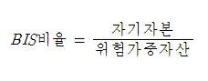

■ BIS비율
은행이
대출을 해주는 돈은 크게 봐서 두종류가 있습니다. 은행이 대출의 재원으로 삼는 첫 번째 돈은 고객이
예금한 돈입니다. 그리고 대출의 재원으로 삼는 두 번째 돈은 은행이 가지고 있던 자기 자신의 돈입니다.
즉 은행을 세울 때 마련한 돈이죠. 이 돈을 어려운 말로 자기자본이라고 합니다. 자기 자신의 돈이라는
뜻이죠.
은행이 대출 해주는 돈 중에 자기 돈이 많다면 설령 대출금을 어느 정도 떼여도 크게 문제가 없습니다.
즉 고객예금 10원, 은행 자기돈 1,000원으로 장사를 시작했다고 합시다. 이때는 예금 받은 돈을
대출을 해주고 모두 떼여도 크게 문제가 없습니다. 자기 돈 1,000원이 있으니까 10원을 메꾸는 것은
거저먹기이기 때문입니다.
그런데 만약 예금 받은 돈 1,000원, 자기돈 1원으로 장사를 했다면 사정이 달라집니다. 예금 받은
돈으로 대출을 했는데 그 돈을 모두 떼이면 어떻게 메꿀 방법이 없습니다.
그래서 나온 개념이 BIS비율입니다. 은행이 얼마나 안전한지 체크할 때 가징 기본적으로 살펴보아야 할
것이 BIS 비율입니다.

예를 들어 은행의 돈이 10원이고 위험가중자산, 쉽게 말해서 대출해준
돈이 100원이라면 BIS비율은 10%가 됩니다. 그리고 bis비율이 10%라는 이야기는 대출해준 돈의
10%를 떼어먹혀도 크게 걱정할 필요가 없다는 이야기입니다. 은행이 가지고 있던 원래의 자기 돈 10원으로
어떻게든 메꿀수 있기 때문입니다.
그렇다면 BIS비율은 어느 정도가 적당할까요? 국제결제은행(BIS)에서는 bis비율이 8% 밑으로 떨어져서는 안 된다고 합니다. 즉, 우리가 거래하는 은행의 BIS비율이 6%, 5%로 떨어지면 어떤 불상사가 생길지 모르니 예금자들은 몸조심을 하라고 합니다.